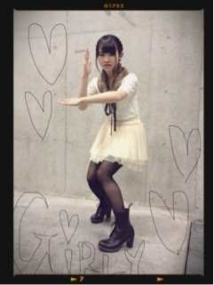

| 2013/01 15 Tue | 342回目*marika |
個別握手会in横浜
成人式。
着物着てる人たくさん見ました。
鮮やかできれいだったなー

まいやん、さゆりん、ななみ、みさ
お姉たまたち♪
おめでとうございます。
でも大変な日だったね！
雪！大雪だった！
なんでこんなに日っっっ
 ‼
‼
‼
私は3部からだったのですが...
雪のため15分遅れて握手会に
させていただきました...><
ご迷惑おかけしました; ;
3部 ストレート耳掛け

シャツ 45rpm
カーディガン Casper
パンツ 韓国
ブーツ Dr.Marten
シャツのボタンは苦しくなければ
上まで止める派です。
もっと男っぽくしようと思ったけど
ヒール履きよったで

盛りましたで
若月がイケメンすぎて
直視できなかった...
ひめかと火花がばちばち←
4部5部 編み込みまとめ
やっぱり好評だった♪

トップス H＆M
チュチュ WEGO
ティペット pas de calais
ガラッと変わって超女の子らしく

メンバーに
ぶりっちょん(ぶりっ子してる)
てめっちゃ言われた笑
ぶりぶり

握手会で初めてぶれた服装したなあ。
こんな天候の中、
来てくださった方
本当にありがとうございました。
風邪引かないようにね><
雪降ったらはしゃぐなんて
子ども子ども

私ははしゃいでないぞ
早く雪溶けろおおおおお
今日はありがとうございました！
だいすき！
まりか
コメント(291)
2013/01/15 00:30